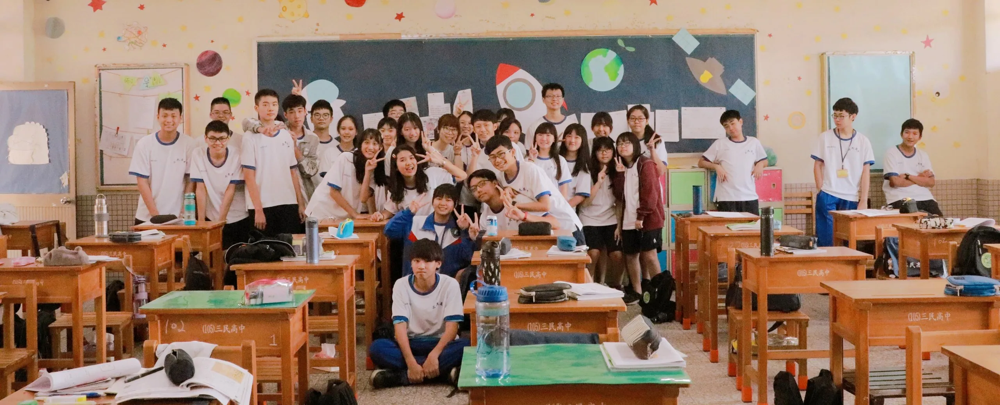

經過一學期的相處，終於到高二要分班了，在我的高一生活也因為很多事讓我記取了不少教訓。
上高中前，我期許自己能換個新的態度待人處事，比較和善點吧！ 剛入學跟這個班相處時，說真的，其實還不錯，大家都竭誠相待，不過好景不常很多相處弊病(？)都現出來了，可能很塑膠？只管自己的事？之類的，從原本行政有效率，最後超難統治！
喔對了，「要你餓」算我們班的口號，因為剛好是班群的名稱 102 = 要你餓，這個口號真的不錯。 說真的我們班的合照真的沒幾張，每次說要拍照的時候真的就不斷推拖，最後就說不拍了 (;´༎ຶД༎ຶ`)
教師節
我們班有合照的時候大概是在高一上學期初跟高一下學期末吧（等等，反差也太大）
當時因為班導投注大量溫暖在我們班上，卻導致同學們覺得很討厭，我覺得無解 (´･_･`)
加上那時接近教師節，也因為這件事接連發生，所以就沒找班導拍班級照，

分班前同樂會
最後一次的同樂會，好像是班導主辦的，希望可以留給這個班最後一個回憶，活動內容主要就才藝表演（咩噗），當時問大家有沒有意願時，大家很自然的都否認，但俗話說感覺到就到了（？），一個接一個準備好上去表演（嗚嗚嗚真的很感動😭
同學們唱出了分班離別的感覺，嗚嗚

同樂會才藝表演


總之最後大家要分班了，這年來真的讓我學到了很多人際的問題，例如要怎麼冷處理不必要的麻煩之類的，管好自己是最明顯的，事不關我的態度真的超貫穿這年的精隨。期許大家上高二後也能一帆風順！